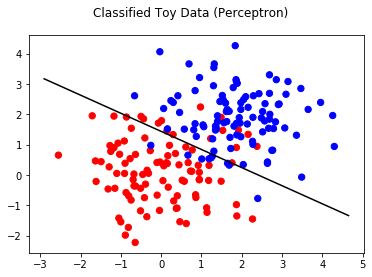
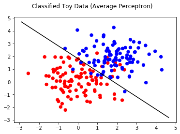
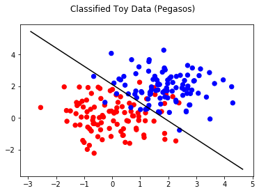
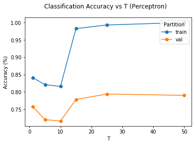
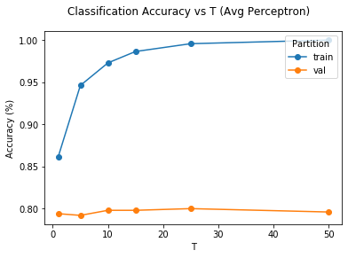
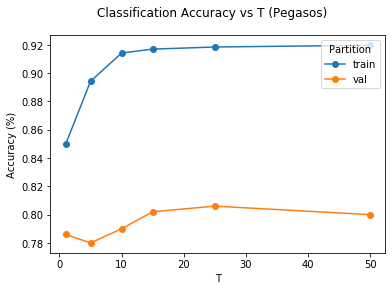
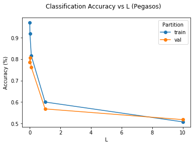

In [13]: runfile('C:/Users/Sergiy/Documents/210 Education/EDX - MIT - ML with Python/Project_1/sentiment_analysis_WORK/main.py', wdir='C:/Users/Sergiy/Documents/210 Education/EDX - MIT - ML with Python/Project_1/sentiment_analysis_WORK')
Reloaded modules: project1, utils
theta for Perceptron is 3.31889999999955, 5.5647999999999795
theta_0 for Perceptron is -8.0

theta for Average Perceptron is 3.8687850989995813, 3.8903095659998432
theta_0 for Average Perceptron is -7.05808

theta for Pegasos is 0.6708387963810953, 0.5849882176940737
theta_0 for Pegasos is -1.2308657435730184

Training accuracy for perceptron: 0.8157
Validation accuracy for perceptron: 0.7160
Training accuracy for average perceptron: 0.9728
Validation accuracy for average perceptron: 0.7980
Training accuracy for Pegasos: 0.9143
Validation accuracy for Pegasos: 0.7900
perceptron valid: [(1, 0.758), (5, 0.72), (10, 0.716), (15, 0.778), (25, 0.794), (50, 0.79)]
best = 0.7940, T=25.0000
avg perceptron valid: [(1, 0.794), (5, 0.792), (10, 0.798), (15, 0.798), (25, 0.8), (50, 0.796)]
best = 0.8000, T=25.0000
Pegasos valid: tune T [(1, 0.786), (5, 0.78), (10, 0.79), (15, 0.802), (25, 0.806), (50, 0.8)]
best = 0.8060, T=25.0000
Pegasos valid: tune L [(0.001, 0.786), (0.01, 0.806), (0.1, 0.762), (1, 0.568), (10, 0.518)]
best = 0.8060, L=0.0100




Training accuracy for the best algorithm: 0.9185
Test accuracy for the best algorithm: 0.8020
[-0.02449628 -0.01006264 0.01906329 ... 0.01342482 0.01342482
0.01342482]
Most Explanatory Word Features
['delicious', 'great', '!', 'best', 'perfect', 'loves', 'wonderful', 'glad', 'love', 'quickly']
In [14]: sorted_word_features = utils.most_explanatory_word(best_theta, wordlist)
...: print("Most Explanatory Word Features")
...: print(sorted_word_features[:10])
Most Explanatory Word Features
['disappointed', 'bad', 'not', 'however', 'but', 'unfortunately', 'awful', 'money', 'ok', '$']
In [15]: